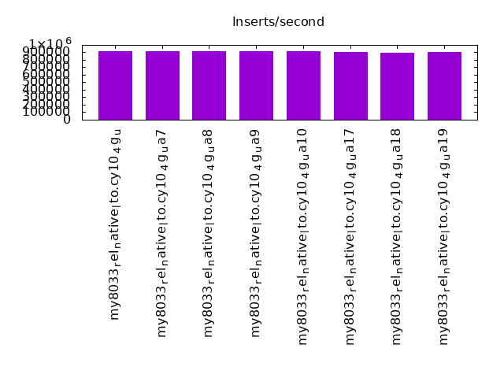
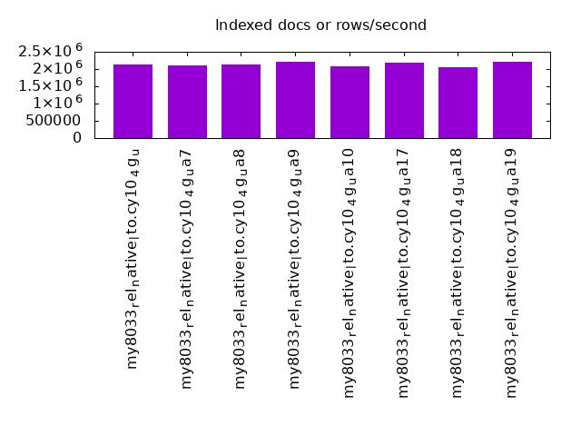
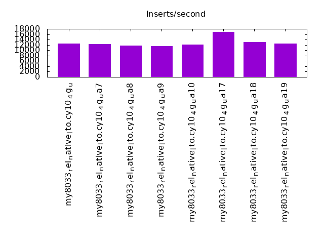

Introduction
This is a report for the insert benchmark with 480M docs and 24 client(s). It is generated by scripts (bash, awk, sed) and Tufte might not be impressed. An overview of the insert benchmark is here and a short update is here. Below, by DBMS, I mean DBMS+version.config. An example is my8020.c10b40 where my means MySQL, 8020 is version 8.0.20 and c10b40 is the name for the configuration file.
The test server has 80 cores with hyperthreads enabled, 256G RAM and fast SSD. The benchmark was run with 8 client and there were 1 or 3 connections per client (1 for queries or inserts without rate limits, 1+1 for rate limited inserts+deletes). There are 24 tables, client per table. It loads 20M rows per-table without secondary indexes, creates secondary indexes, then inserts 5M rows per-table with a delete per insert to avoid growing the table. The read+write tests were skipped. The database is cached the OS but not by InnoDB.
The tested DBMS are:
- my8033_rel_native_lto.cy10_4g_u - InnoDB and MySQL 8.0.33, rel_native_lto build, cy10a_4g_u config, compiled with CMAKE_BUILD_TYPE=Release -flto -march=native -mtune=native
- my8033_rel_native_lto.cy10_4g_ua7 - InnoDB and MySQL 8.0.33, rel_native_lto build, cy10a_4g_ua7 config, compiled with CMAKE_BUILD_TYPE=Release -flto -march=native -mtune=native, adds innodb_lru_scan_depth=2048
- my8033_rel_native_lto.cy10_4g_ua8 - InnoDB and MySQL 8.0.33, rel_native_lto build, cy10a_4g_ua8 config, compiled with CMAKE_BUILD_TYPE=Release -flto -march=native -mtune=native, adds innodb_lru_scan_depth=4096
- my8033_rel_native_lto.cy10_4g_ua9 - InnoDB and MySQL 8.0.33, rel_native_lto build, cy10a_4g_ua9 config, compiled with CMAKE_BUILD_TYPE=Release -flto -march=native -mtune=native, adds innodb_lru_scan_depth=8192
- my8033_rel_native_lto.cy10_4g_ua10 - InnoDB and MySQL 8.0.33, rel_native_lto build, cy10a_4g_ua10 config, compiled with CMAKE_BUILD_TYPE=Release -flto -march=native -mtune=native, adds innodb_page_cleaners=8
- my8033_rel_native_lto.cy10_4g_ua17 - InnoDB and MySQL 8.0.33, rel_native_lto build, cy10a_4g_ua17 config, compiled with CMAKE_BUILD_TYPE=Release -flto -march=native -mtune=native, adds innodb_doublewrite=OFF
- my8033_rel_native_lto.cy10_4g_ua18 - InnoDB and MySQL 8.0.33, rel_native_lto build, cy10a_4g_ua18 config, compiled with CMAKE_BUILD_TYPE=Release -flto -march=native -mtune=native, adds innodb_buffer_pool_instances, innodb_page_cleaners, innodb_purge_threads =4
- my8033_rel_native_lto.cy10_4g_ua19 - InnoDB and MySQL 8.0.33, rel_native_lto build, cy10a_4g_ua19 config, compiled with CMAKE_BUILD_TYPE=Release -flto -march=native -mtune=native, adds innodb_max_dirty_pages_pct_lwm=20, innodb_max_dirty_pages_pct=50
Contents
- Summary
- l.i0: load without secondary indexes
- l.x: create secondary indexes
- l.i1: continue load after secondary indexes created
- q100.1: range queries with 100 insert/s per client
- q500.1: range queries with 500 insert/s per client
- q1000.1: range queries with 1000 insert/s per client
Summary
The numbers are inserts/s for l.i0 and l.i1, indexed docs (or rows) /s for l.x and queries/s for q*.2. The values are the average rate over the entire test for inserts (IPS) and queries (QPS). The range of values for IPS and QPS is split into 3 parts: bottom 25%, middle 50%, top 25%. Values in the bottom 25% have a red background, values in the top 25% have a green background and values in the middle have no color. A gray background is used for values that can be ignored because the DBMS did not sustain the target insert rate. Red backgrounds are not used when the minimum value is within 80% of the max value.
| dbms | l.i0 | l.x | l.i1 | q100.1 | q500.1 | q1000.1 |
|---|---|---|---|---|---|---|
| my8033_rel_native_lto.cy10_4g_u | 910816 | 2133778 | 12535 | |||
| my8033_rel_native_lto.cy10_4g_ua7 | 917782 | 2096506 | 12244 | |||
| my8033_rel_native_lto.cy10_4g_ua8 | 916030 | 2143304 | 11839 | |||
| my8033_rel_native_lto.cy10_4g_ua9 | 916030 | 2212442 | 11621 | |||
| my8033_rel_native_lto.cy10_4g_ua10 | 912548 | 2087391 | 12208 | |||
| my8033_rel_native_lto.cy10_4g_ua17 | 900563 | 2192237 | 16952 | |||
| my8033_rel_native_lto.cy10_4g_ua18 | 892193 | 2051709 | 13159 | |||
| my8033_rel_native_lto.cy10_4g_ua19 | 902256 | 2222685 | 12440 |
This table has relative throughput, throughput for the DBMS relative to the DBMS in the first line, using the absolute throughput from the previous table. Values less than 0.95 have a yellow background. Values greater than 1.05 have a blue background.
| dbms | l.i0 | l.x | l.i1 | q100.1 | q500.1 | q1000.1 |
|---|---|---|---|---|---|---|
| my8033_rel_native_lto.cy10_4g_u | 1.00 | 1.00 | 1.00 | 1.00 | 1.00 | 1.00 |
| my8033_rel_native_lto.cy10_4g_ua7 | 1.01 | 0.98 | 0.98 | |||
| my8033_rel_native_lto.cy10_4g_ua8 | 1.01 | 1.00 | 0.94 | |||
| my8033_rel_native_lto.cy10_4g_ua9 | 1.01 | 1.04 | 0.93 | |||
| my8033_rel_native_lto.cy10_4g_ua10 | 1.00 | 0.98 | 0.97 | |||
| my8033_rel_native_lto.cy10_4g_ua17 | 0.99 | 1.03 | 1.35 | |||
| my8033_rel_native_lto.cy10_4g_ua18 | 0.98 | 0.96 | 1.05 | |||
| my8033_rel_native_lto.cy10_4g_ua19 | 0.99 | 1.04 | 0.99 |
This lists the average rate of inserts/s for the tests that do inserts concurrent with queries. For such tests the query rate is listed in the table above. The read+write tests are setup so that the insert rate should match the target rate every second. Cells that are not at least 95% of the target have a red background to indicate a failure to satisfy the target.
| dbms | q100.1 | q500.1 | q1000.1 |
|---|---|---|---|
| my8033_rel_native_lto.cy10_4g_u | |||
| my8033_rel_native_lto.cy10_4g_ua7 | |||
| my8033_rel_native_lto.cy10_4g_ua8 | |||
| my8033_rel_native_lto.cy10_4g_ua9 | |||
| my8033_rel_native_lto.cy10_4g_ua10 | |||
| my8033_rel_native_lto.cy10_4g_ua17 | |||
| my8033_rel_native_lto.cy10_4g_ua18 | |||
| my8033_rel_native_lto.cy10_4g_ua19 | |||
| target | 2400 | 12000 | 24000 |
l.i0
l.i0: load without secondary indexes. Graphs for performance per 1-second interval are here.
Average throughput:
Insert response time histogram: each cell has the percentage of responses that take <= the time in the header and max is the max response time in seconds. For the max column values in the top 25% of the range have a red background and in the bottom 25% of the range have a green background. The red background is not used when the min value is within 80% of the max value.
| dbms | 256us | 1ms | 4ms | 16ms | 64ms | 256ms | 1s | 4s | 16s | gt | max |
|---|---|---|---|---|---|---|---|---|---|---|---|
| my8033_rel_native_lto.cy10_4g_u | 99.779 | 0.174 | 0.004 | 0.043 | 0.114 | ||||||
| my8033_rel_native_lto.cy10_4g_ua7 | 99.779 | 0.175 | 0.003 | 0.043 | 0.124 | ||||||
| my8033_rel_native_lto.cy10_4g_ua8 | 99.778 | 0.177 | 0.002 | 0.043 | 0.124 | ||||||
| my8033_rel_native_lto.cy10_4g_ua9 | 99.757 | 0.196 | 0.005 | 0.043 | 0.116 | ||||||
| my8033_rel_native_lto.cy10_4g_ua10 | 99.770 | 0.184 | 0.003 | 0.043 | 0.117 | ||||||
| my8033_rel_native_lto.cy10_4g_ua17 | 99.779 | 0.177 | 0.001 | 0.043 | 0.114 | ||||||
| my8033_rel_native_lto.cy10_4g_ua18 | 99.767 | 0.186 | 0.004 | 0.043 | 0.113 | ||||||
| my8033_rel_native_lto.cy10_4g_ua19 | 99.774 | 0.180 | 0.003 | 0.043 | 0.116 |
Performance metrics for the DBMS listed above. Some are normalized by throughput, others are not. Legend for results is here.
ips qps rps rmbps wps wmbps rpq rkbpq wpi wkbpi csps cpups cspq cpupq dbgb1 dbgb2 rss maxop p50 p99 tag 910816 0 0 0.0 3598.0 240.5 0.000 0.000 0.004 0.270 230820 49.9 0.253 44 31.7 160.3 4.8 0.114 40060 33966 480m.my8033_rel_native_lto.cy10_4g_u 917782 0 0 0.0 3622.6 242.0 0.000 0.000 0.004 0.270 230253 49.8 0.251 43 31.7 160.3 4.6 0.124 40060 33766 480m.my8033_rel_native_lto.cy10_4g_ua7 916030 0 0 0.0 3592.5 241.5 0.000 0.000 0.004 0.270 230854 49.4 0.252 43 31.7 160.3 4.4 0.124 39860 33766 480m.my8033_rel_native_lto.cy10_4g_ua8 916030 0 0 0.0 3548.2 242.0 0.000 0.000 0.004 0.271 234047 49.9 0.256 44 31.7 160.3 3.9 0.116 40355 34366 480m.my8033_rel_native_lto.cy10_4g_ua9 912548 0 0 0.0 3577.6 241.1 0.000 0.000 0.004 0.271 239392 49.5 0.262 43 31.7 160.3 4.8 0.117 40160 34266 480m.my8033_rel_native_lto.cy10_4g_ua10 900563 0 0 0.0 2331.8 189.4 0.000 0.000 0.003 0.215 216687 50.8 0.241 45 31.7 160.3 4.7 0.114 39361 34074 480m.my8033_rel_native_lto.cy10_4g_ua17 892193 0 0 0.0 3919.0 240.2 0.000 0.000 0.004 0.276 231224 50.6 0.259 45 31.7 160.3 4.8 0.113 39560 33766 480m.my8033_rel_native_lto.cy10_4g_ua18 902256 0 0 0.0 3695.6 244.7 0.000 0.000 0.004 0.278 233372 51.4 0.259 46 31.7 160.3 4.7 0.116 39660 34266 480m.my8033_rel_native_lto.cy10_4g_ua19
l.x
l.x: create secondary indexes.
Average throughput:
Performance metrics for the DBMS listed above. Some are normalized by throughput, others are not. Legend for results is here.
ips qps rps rmbps wps wmbps rpq rkbpq wpi wkbpi csps cpups cspq cpupq dbgb1 dbgb2 rss maxop p50 p99 tag 2133778 0 11422 554.1 37390.0 1552.6 0.005 0.266 0.018 0.745 220122 77.9 0.103 29 70.6 199.2 4.9 0.007 NA NA 480m.my8033_rel_native_lto.cy10_4g_u 2096506 0 11174 542.0 36633.4 1517.8 0.005 0.265 0.017 0.741 218695 76.7 0.104 29 70.6 199.2 4.9 0.007 NA NA 480m.my8033_rel_native_lto.cy10_4g_ua7 2143304 0 11426 554.2 36808.7 1550.3 0.005 0.265 0.017 0.741 223137 78.4 0.104 29 70.6 199.2 4.9 0.008 NA NA 480m.my8033_rel_native_lto.cy10_4g_ua8 2212442 0 11955 579.9 39194.6 1619.7 0.005 0.268 0.018 0.750 236912 78.5 0.107 28 70.6 199.2 4.9 0.006 NA NA 480m.my8033_rel_native_lto.cy10_4g_ua9 2087391 0 11175 542.1 35959.8 1518.8 0.005 0.266 0.017 0.745 224267 78.0 0.107 30 70.6 199.2 4.9 0.010 NA NA 480m.my8033_rel_native_lto.cy10_4g_ua10 2192237 0 11683 566.8 26824.3 1356.0 0.005 0.265 0.012 0.633 170648 80.1 0.078 29 70.6 199.2 4.8 0.016 NA NA 480m.my8033_rel_native_lto.cy10_4g_ua17 2051709 0 10936 530.4 37913.8 1500.6 0.005 0.265 0.018 0.749 199437 78.2 0.097 30 70.6 199.2 5.0 0.008 NA NA 480m.my8033_rel_native_lto.cy10_4g_ua18 2222685 0 11952 579.8 36919.7 1604.6 0.005 0.267 0.017 0.739 221683 79.0 0.100 28 70.6 199.2 4.9 0.007 NA NA 480m.my8033_rel_native_lto.cy10_4g_ua19
l.i1
l.i1: continue load after secondary indexes created. Graphs for performance per 1-second interval are here.
Average throughput:
Insert response time histogram: each cell has the percentage of responses that take <= the time in the header and max is the max response time in seconds. For the max column values in the top 25% of the range have a red background and in the bottom 25% of the range have a green background. The red background is not used when the min value is within 80% of the max value.
| dbms | 256us | 1ms | 4ms | 16ms | 64ms | 256ms | 1s | 4s | 16s | gt | max |
|---|---|---|---|---|---|---|---|---|---|---|---|
| my8033_rel_native_lto.cy10_4g_u | 0.013 | 4.866 | 53.619 | 37.079 | 4.273 | 0.085 | 0.064 | 11.097 | |||
| my8033_rel_native_lto.cy10_4g_ua7 | 0.005 | 4.789 | 51.977 | 38.753 | 4.321 | 0.095 | 0.060 | 11.563 | |||
| my8033_rel_native_lto.cy10_4g_ua8 | 0.001 | 4.528 | 51.016 | 39.855 | 4.444 | 0.090 | 0.066 | 11.816 | |||
| my8033_rel_native_lto.cy10_4g_ua9 | 0.001 | 4.504 | 50.401 | 40.512 | 4.410 | 0.103 | 0.069 | 11.145 | |||
| my8033_rel_native_lto.cy10_4g_ua10 | nonzero | 3.962 | 56.910 | 34.186 | 4.724 | 0.183 | 0.036 | 10.364 | |||
| my8033_rel_native_lto.cy10_4g_ua17 | nonzero | 6.881 | 71.201 | 20.283 | 1.519 | 0.069 | 0.047 | 9.942 | |||
| my8033_rel_native_lto.cy10_4g_ua18 | nonzero | 2.432 | 51.668 | 40.218 | 5.577 | 0.088 | 0.017 | 10.004 | |||
| my8033_rel_native_lto.cy10_4g_ua19 | 0.007 | 4.131 | 53.387 | 37.911 | 4.380 | 0.124 | 0.059 | 9.083 |
Delete response time histogram: each cell has the percentage of responses that take <= the time in the header and max is the max response time in seconds. For the max column values in the top 25% of the range have a red background and in the bottom 25% of the range have a green background. The red background is not used when the min value is within 80% of the max value.
| dbms | 256us | 1ms | 4ms | 16ms | 64ms | 256ms | 1s | 4s | 16s | gt | max |
|---|---|---|---|---|---|---|---|---|---|---|---|
| my8033_rel_native_lto.cy10_4g_u | 0.111 | 6.893 | 55.066 | 34.124 | 3.662 | 0.083 | 0.062 | 11.833 | |||
| my8033_rel_native_lto.cy10_4g_ua7 | 0.057 | 6.658 | 53.486 | 35.924 | 3.727 | 0.091 | 0.058 | 10.711 | |||
| my8033_rel_native_lto.cy10_4g_ua8 | 0.047 | 6.497 | 52.454 | 37.076 | 3.778 | 0.084 | 0.064 | 11.079 | |||
| my8033_rel_native_lto.cy10_4g_ua9 | 0.040 | 6.009 | 52.250 | 37.818 | 3.721 | 0.095 | 0.067 | 11.340 | |||
| my8033_rel_native_lto.cy10_4g_ua10 | 0.023 | 5.802 | 58.318 | 31.605 | 4.043 | 0.176 | 0.033 | 9.918 | |||
| my8033_rel_native_lto.cy10_4g_ua17 | 0.044 | 9.520 | 70.141 | 18.905 | 1.283 | 0.064 | 0.043 | 9.142 | |||
| my8033_rel_native_lto.cy10_4g_ua18 | 0.029 | 3.921 | 52.536 | 38.694 | 4.723 | 0.081 | 0.016 | 9.211 | |||
| my8033_rel_native_lto.cy10_4g_ua19 | 0.083 | 5.916 | 54.764 | 35.227 | 3.833 | 0.120 | 0.057 | 9.554 |
Performance metrics for the DBMS listed above. Some are normalized by throughput, others are not. Legend for results is here.
ips qps rps rmbps wps wmbps rpq rkbpq wpi wkbpi csps cpups cspq cpupq dbgb1 dbgb2 rss maxop p50 p99 tag 12535 0 47 0.6 27822.1 793.5 0.004 0.050 2.220 64.819 563837 34.6 44.980 2208 117.5 256.3 4.8 11.097 0 0 480m.my8033_rel_native_lto.cy10_4g_u 12244 0 45 0.6 26722.3 768.7 0.004 0.048 2.183 64.294 558090 34.1 45.582 2228 117.5 256.3 4.8 11.563 0 0 480m.my8033_rel_native_lto.cy10_4g_ua7 11839 0 44 0.6 25567.8 740.5 0.004 0.048 2.160 64.052 536874 33.7 45.348 2277 117.5 256.3 4.8 11.816 0 0 480m.my8033_rel_native_lto.cy10_4g_ua8 11621 0 42 0.6 23469.1 695.2 0.004 0.049 2.020 61.257 523974 33.1 45.088 2279 117.5 256.3 4.8 11.145 0 0 480m.my8033_rel_native_lto.cy10_4g_ua9 12208 0 35 0.7 25805.7 783.4 0.003 0.055 2.114 65.711 537987 36.1 44.070 2366 117.4 256.1 4.8 10.364 50 0 480m.my8033_rel_native_lto.cy10_4g_ua10 16952 0 67 0.9 28118.3 621.6 0.004 0.054 1.659 37.551 528935 41.3 31.203 1949 117.5 256.1 4.8 9.942 0 0 480m.my8033_rel_native_lto.cy10_4g_ua17 13159 0 50 0.6 24111.9 740.4 0.004 0.050 1.832 57.616 455895 38.9 34.644 2365 117.2 256.2 4.9 10.004 549 50 480m.my8033_rel_native_lto.cy10_4g_ua18 12440 0 48 0.6 33698.6 939.5 0.004 0.052 2.709 77.335 575410 36.6 46.254 2354 117.5 256.3 4.8 9.083 0 0 480m.my8033_rel_native_lto.cy10_4g_ua19
q100.1
q100.1: range queries with 100 insert/s per client. Graphs for performance per 1-second interval are here.
Average throughput:

Query response time histogram: each cell has the percentage of responses that take <= the time in the header and max is the max response time in seconds. For max values in the top 25% of the range have a red background and in the bottom 25% of the range have a green background. The red background is not used when the min value is within 80% of the max value.
| dbms |
|---|
Insert response time histogram: each cell has the percentage of responses that take <= the time in the header and max is the max response time in seconds. For max values in the top 25% of the range have a red background and in the bottom 25% of the range have a green background. The red background is not used when the min value is within 80% of the max value.
| dbms |
|---|
Performance metrics for the DBMS listed above. Some are normalized by throughput, others are not. Legend for results is here.
ips qps rps rmbps wps wmbps rpq rkbpq wpi wkbpi csps cpups cspq cpupq dbgb1 dbgb2 rss maxop p50 p99 tag 0 0 0 NA 480m.my8033_rel_native_lto.cy10_4g_u 0 0 0 NA 480m.my8033_rel_native_lto.cy10_4g_ua7 0 0 0 NA 480m.my8033_rel_native_lto.cy10_4g_ua8 0 0 0 NA 480m.my8033_rel_native_lto.cy10_4g_ua9 0 0 0 NA 480m.my8033_rel_native_lto.cy10_4g_ua10 0 0 0 NA 480m.my8033_rel_native_lto.cy10_4g_ua17 0 0 0 NA 480m.my8033_rel_native_lto.cy10_4g_ua18 0 0 0 NA 480m.my8033_rel_native_lto.cy10_4g_ua19
q500.1
q500.1: range queries with 500 insert/s per client. Graphs for performance per 1-second interval are here.
Average throughput:

Query response time histogram: each cell has the percentage of responses that take <= the time in the header and max is the max response time in seconds. For max values in the top 25% of the range have a red background and in the bottom 25% of the range have a green background. The red background is not used when the min value is within 80% of the max value.
| dbms |
|---|
Insert response time histogram: each cell has the percentage of responses that take <= the time in the header and max is the max response time in seconds. For max values in the top 25% of the range have a red background and in the bottom 25% of the range have a green background. The red background is not used when the min value is within 80% of the max value.
| dbms |
|---|
Performance metrics for the DBMS listed above. Some are normalized by throughput, others are not. Legend for results is here.
ips qps rps rmbps wps wmbps rpq rkbpq wpi wkbpi csps cpups cspq cpupq dbgb1 dbgb2 rss maxop p50 p99 tag 0 0 0 NA 480m.my8033_rel_native_lto.cy10_4g_u 0 0 0 NA 480m.my8033_rel_native_lto.cy10_4g_ua7 0 0 0 NA 480m.my8033_rel_native_lto.cy10_4g_ua8 0 0 0 NA 480m.my8033_rel_native_lto.cy10_4g_ua9 0 0 0 NA 480m.my8033_rel_native_lto.cy10_4g_ua10 0 0 0 NA 480m.my8033_rel_native_lto.cy10_4g_ua17 0 0 0 NA 480m.my8033_rel_native_lto.cy10_4g_ua18 0 0 0 NA 480m.my8033_rel_native_lto.cy10_4g_ua19
q1000.1
q1000.1: range queries with 1000 insert/s per client. Graphs for performance per 1-second interval are here.
Average throughput:

Query response time histogram: each cell has the percentage of responses that take <= the time in the header and max is the max response time in seconds. For max values in the top 25% of the range have a red background and in the bottom 25% of the range have a green background. The red background is not used when the min value is within 80% of the max value.
| dbms |
|---|
Insert response time histogram: each cell has the percentage of responses that take <= the time in the header and max is the max response time in seconds. For max values in the top 25% of the range have a red background and in the bottom 25% of the range have a green background. The red background is not used when the min value is within 80% of the max value.
| dbms |
|---|
Performance metrics for the DBMS listed above. Some are normalized by throughput, others are not. Legend for results is here.
ips qps rps rmbps wps wmbps rpq rkbpq wpi wkbpi csps cpups cspq cpupq dbgb1 dbgb2 rss maxop p50 p99 tag 0 0 0 NA 480m.my8033_rel_native_lto.cy10_4g_u 0 0 0 NA 480m.my8033_rel_native_lto.cy10_4g_ua7 0 0 0 NA 480m.my8033_rel_native_lto.cy10_4g_ua8 0 0 0 NA 480m.my8033_rel_native_lto.cy10_4g_ua9 0 0 0 NA 480m.my8033_rel_native_lto.cy10_4g_ua10 0 0 0 NA 480m.my8033_rel_native_lto.cy10_4g_ua17 0 0 0 NA 480m.my8033_rel_native_lto.cy10_4g_ua18 0 0 0 NA 480m.my8033_rel_native_lto.cy10_4g_ua19
l.i0
l.i0: load without secondary indexes
Performance metrics for all DBMS, not just the ones listed above. Some are normalized by throughput, others are not. Legend for results is here.
ips qps rps rmbps wps wmbps rpq rkbpq wpi wkbpi csps cpups cspq cpupq dbgb1 dbgb2 rss maxop p50 p99 tag 910816 0 0 0.0 3598.0 240.5 0.000 0.000 0.004 0.270 230820 49.9 0.253 44 31.7 160.3 4.8 0.114 40060 33966 480m.my8033_rel_native_lto.cy10_4g_u 917782 0 0 0.0 3622.6 242.0 0.000 0.000 0.004 0.270 230253 49.8 0.251 43 31.7 160.3 4.6 0.124 40060 33766 480m.my8033_rel_native_lto.cy10_4g_ua7 916030 0 0 0.0 3592.5 241.5 0.000 0.000 0.004 0.270 230854 49.4 0.252 43 31.7 160.3 4.4 0.124 39860 33766 480m.my8033_rel_native_lto.cy10_4g_ua8 916030 0 0 0.0 3548.2 242.0 0.000 0.000 0.004 0.271 234047 49.9 0.256 44 31.7 160.3 3.9 0.116 40355 34366 480m.my8033_rel_native_lto.cy10_4g_ua9 912548 0 0 0.0 3577.6 241.1 0.000 0.000 0.004 0.271 239392 49.5 0.262 43 31.7 160.3 4.8 0.117 40160 34266 480m.my8033_rel_native_lto.cy10_4g_ua10 900563 0 0 0.0 2331.8 189.4 0.000 0.000 0.003 0.215 216687 50.8 0.241 45 31.7 160.3 4.7 0.114 39361 34074 480m.my8033_rel_native_lto.cy10_4g_ua17 892193 0 0 0.0 3919.0 240.2 0.000 0.000 0.004 0.276 231224 50.6 0.259 45 31.7 160.3 4.8 0.113 39560 33766 480m.my8033_rel_native_lto.cy10_4g_ua18 902256 0 0 0.0 3695.6 244.7 0.000 0.000 0.004 0.278 233372 51.4 0.259 46 31.7 160.3 4.7 0.116 39660 34266 480m.my8033_rel_native_lto.cy10_4g_ua19
l.x
l.x: create secondary indexes
Performance metrics for all DBMS, not just the ones listed above. Some are normalized by throughput, others are not. Legend for results is here.
ips qps rps rmbps wps wmbps rpq rkbpq wpi wkbpi csps cpups cspq cpupq dbgb1 dbgb2 rss maxop p50 p99 tag 2133778 0 11422 554.1 37390.0 1552.6 0.005 0.266 0.018 0.745 220122 77.9 0.103 29 70.6 199.2 4.9 0.007 NA NA 480m.my8033_rel_native_lto.cy10_4g_u 2096506 0 11174 542.0 36633.4 1517.8 0.005 0.265 0.017 0.741 218695 76.7 0.104 29 70.6 199.2 4.9 0.007 NA NA 480m.my8033_rel_native_lto.cy10_4g_ua7 2143304 0 11426 554.2 36808.7 1550.3 0.005 0.265 0.017 0.741 223137 78.4 0.104 29 70.6 199.2 4.9 0.008 NA NA 480m.my8033_rel_native_lto.cy10_4g_ua8 2212442 0 11955 579.9 39194.6 1619.7 0.005 0.268 0.018 0.750 236912 78.5 0.107 28 70.6 199.2 4.9 0.006 NA NA 480m.my8033_rel_native_lto.cy10_4g_ua9 2087391 0 11175 542.1 35959.8 1518.8 0.005 0.266 0.017 0.745 224267 78.0 0.107 30 70.6 199.2 4.9 0.010 NA NA 480m.my8033_rel_native_lto.cy10_4g_ua10 2192237 0 11683 566.8 26824.3 1356.0 0.005 0.265 0.012 0.633 170648 80.1 0.078 29 70.6 199.2 4.8 0.016 NA NA 480m.my8033_rel_native_lto.cy10_4g_ua17 2051709 0 10936 530.4 37913.8 1500.6 0.005 0.265 0.018 0.749 199437 78.2 0.097 30 70.6 199.2 5.0 0.008 NA NA 480m.my8033_rel_native_lto.cy10_4g_ua18 2222685 0 11952 579.8 36919.7 1604.6 0.005 0.267 0.017 0.739 221683 79.0 0.100 28 70.6 199.2 4.9 0.007 NA NA 480m.my8033_rel_native_lto.cy10_4g_ua19
l.i1
l.i1: continue load after secondary indexes created
Performance metrics for all DBMS, not just the ones listed above. Some are normalized by throughput, others are not. Legend for results is here.
ips qps rps rmbps wps wmbps rpq rkbpq wpi wkbpi csps cpups cspq cpupq dbgb1 dbgb2 rss maxop p50 p99 tag 12535 0 47 0.6 27822.1 793.5 0.004 0.050 2.220 64.819 563837 34.6 44.980 2208 117.5 256.3 4.8 11.097 0 0 480m.my8033_rel_native_lto.cy10_4g_u 12244 0 45 0.6 26722.3 768.7 0.004 0.048 2.183 64.294 558090 34.1 45.582 2228 117.5 256.3 4.8 11.563 0 0 480m.my8033_rel_native_lto.cy10_4g_ua7 11839 0 44 0.6 25567.8 740.5 0.004 0.048 2.160 64.052 536874 33.7 45.348 2277 117.5 256.3 4.8 11.816 0 0 480m.my8033_rel_native_lto.cy10_4g_ua8 11621 0 42 0.6 23469.1 695.2 0.004 0.049 2.020 61.257 523974 33.1 45.088 2279 117.5 256.3 4.8 11.145 0 0 480m.my8033_rel_native_lto.cy10_4g_ua9 12208 0 35 0.7 25805.7 783.4 0.003 0.055 2.114 65.711 537987 36.1 44.070 2366 117.4 256.1 4.8 10.364 50 0 480m.my8033_rel_native_lto.cy10_4g_ua10 16952 0 67 0.9 28118.3 621.6 0.004 0.054 1.659 37.551 528935 41.3 31.203 1949 117.5 256.1 4.8 9.942 0 0 480m.my8033_rel_native_lto.cy10_4g_ua17 13159 0 50 0.6 24111.9 740.4 0.004 0.050 1.832 57.616 455895 38.9 34.644 2365 117.2 256.2 4.9 10.004 549 50 480m.my8033_rel_native_lto.cy10_4g_ua18 12440 0 48 0.6 33698.6 939.5 0.004 0.052 2.709 77.335 575410 36.6 46.254 2354 117.5 256.3 4.8 9.083 0 0 480m.my8033_rel_native_lto.cy10_4g_ua19
q100.1
q100.1: range queries with 100 insert/s per client
Performance metrics for all DBMS, not just the ones listed above. Some are normalized by throughput, others are not. Legend for results is here.
ips qps rps rmbps wps wmbps rpq rkbpq wpi wkbpi csps cpups cspq cpupq dbgb1 dbgb2 rss maxop p50 p99 tag 0 0 0 NA 480m.my8033_rel_native_lto.cy10_4g_u 0 0 0 NA 480m.my8033_rel_native_lto.cy10_4g_ua7 0 0 0 NA 480m.my8033_rel_native_lto.cy10_4g_ua8 0 0 0 NA 480m.my8033_rel_native_lto.cy10_4g_ua9 0 0 0 NA 480m.my8033_rel_native_lto.cy10_4g_ua10 0 0 0 NA 480m.my8033_rel_native_lto.cy10_4g_ua17 0 0 0 NA 480m.my8033_rel_native_lto.cy10_4g_ua18 0 0 0 NA 480m.my8033_rel_native_lto.cy10_4g_ua19
q500.1
q500.1: range queries with 500 insert/s per client
Performance metrics for all DBMS, not just the ones listed above. Some are normalized by throughput, others are not. Legend for results is here.
ips qps rps rmbps wps wmbps rpq rkbpq wpi wkbpi csps cpups cspq cpupq dbgb1 dbgb2 rss maxop p50 p99 tag 0 0 0 NA 480m.my8033_rel_native_lto.cy10_4g_u 0 0 0 NA 480m.my8033_rel_native_lto.cy10_4g_ua7 0 0 0 NA 480m.my8033_rel_native_lto.cy10_4g_ua8 0 0 0 NA 480m.my8033_rel_native_lto.cy10_4g_ua9 0 0 0 NA 480m.my8033_rel_native_lto.cy10_4g_ua10 0 0 0 NA 480m.my8033_rel_native_lto.cy10_4g_ua17 0 0 0 NA 480m.my8033_rel_native_lto.cy10_4g_ua18 0 0 0 NA 480m.my8033_rel_native_lto.cy10_4g_ua19
q1000.1
q1000.1: range queries with 1000 insert/s per client
Performance metrics for all DBMS, not just the ones listed above. Some are normalized by throughput, others are not. Legend for results is here.
ips qps rps rmbps wps wmbps rpq rkbpq wpi wkbpi csps cpups cspq cpupq dbgb1 dbgb2 rss maxop p50 p99 tag 0 0 0 NA 480m.my8033_rel_native_lto.cy10_4g_u 0 0 0 NA 480m.my8033_rel_native_lto.cy10_4g_ua7 0 0 0 NA 480m.my8033_rel_native_lto.cy10_4g_ua8 0 0 0 NA 480m.my8033_rel_native_lto.cy10_4g_ua9 0 0 0 NA 480m.my8033_rel_native_lto.cy10_4g_ua10 0 0 0 NA 480m.my8033_rel_native_lto.cy10_4g_ua17 0 0 0 NA 480m.my8033_rel_native_lto.cy10_4g_ua18 0 0 0 NA 480m.my8033_rel_native_lto.cy10_4g_ua19
l.i0
- l.i0: load without secondary indexes
- Legend for results is here.
- Each entry lists the percentage of responses that fit in that bucket (slower than max time for previous bucket, faster than min time for next bucket).
Insert response time histogram
256us 1ms 4ms 16ms 64ms 256ms 1s 4s 16s gt max tag 0.000 0.000 99.779 0.174 0.004 0.043 0.000 0.000 0.000 0.000 0.114 my8033_rel_native_lto.cy10_4g_u 0.000 0.000 99.779 0.175 0.003 0.043 0.000 0.000 0.000 0.000 0.124 my8033_rel_native_lto.cy10_4g_ua7 0.000 0.000 99.778 0.177 0.002 0.043 0.000 0.000 0.000 0.000 0.124 my8033_rel_native_lto.cy10_4g_ua8 0.000 0.000 99.757 0.196 0.005 0.043 0.000 0.000 0.000 0.000 0.116 my8033_rel_native_lto.cy10_4g_ua9 0.000 0.000 99.770 0.184 0.003 0.043 0.000 0.000 0.000 0.000 0.117 my8033_rel_native_lto.cy10_4g_ua10 0.000 0.000 99.779 0.177 0.001 0.043 0.000 0.000 0.000 0.000 0.114 my8033_rel_native_lto.cy10_4g_ua17 0.000 0.000 99.767 0.186 0.004 0.043 0.000 0.000 0.000 0.000 0.113 my8033_rel_native_lto.cy10_4g_ua18 0.000 0.000 99.774 0.180 0.003 0.043 0.000 0.000 0.000 0.000 0.116 my8033_rel_native_lto.cy10_4g_ua19
l.x
- l.x: create secondary indexes
- Legend for results is here.
- Each entry lists the percentage of responses that fit in that bucket (slower than max time for previous bucket, faster than min time for next bucket).
TODO - determine whether there is data for create index response time
l.i1
- l.i1: continue load after secondary indexes created
- Legend for results is here.
- Each entry lists the percentage of responses that fit in that bucket (slower than max time for previous bucket, faster than min time for next bucket).
Insert response time histogram
256us 1ms 4ms 16ms 64ms 256ms 1s 4s 16s gt max tag 0.000 0.000 0.013 4.866 53.619 37.079 4.273 0.085 0.064 0.000 11.097 my8033_rel_native_lto.cy10_4g_u 0.000 0.000 0.005 4.789 51.977 38.753 4.321 0.095 0.060 0.000 11.563 my8033_rel_native_lto.cy10_4g_ua7 0.000 0.000 0.001 4.528 51.016 39.855 4.444 0.090 0.066 0.000 11.816 my8033_rel_native_lto.cy10_4g_ua8 0.000 0.000 0.001 4.504 50.401 40.512 4.410 0.103 0.069 0.000 11.145 my8033_rel_native_lto.cy10_4g_ua9 0.000 0.000 nonzero 3.962 56.910 34.186 4.724 0.183 0.036 0.000 10.364 my8033_rel_native_lto.cy10_4g_ua10 0.000 0.000 nonzero 6.881 71.201 20.283 1.519 0.069 0.047 0.000 9.942 my8033_rel_native_lto.cy10_4g_ua17 0.000 0.000 nonzero 2.432 51.668 40.218 5.577 0.088 0.017 0.000 10.004 my8033_rel_native_lto.cy10_4g_ua18 0.000 0.000 0.007 4.131 53.387 37.911 4.380 0.124 0.059 0.000 9.083 my8033_rel_native_lto.cy10_4g_ua19
Delete response time histogram
256us 1ms 4ms 16ms 64ms 256ms 1s 4s 16s gt max tag 0.000 0.000 0.111 6.893 55.066 34.124 3.662 0.083 0.062 0.000 11.833 my8033_rel_native_lto.cy10_4g_u 0.000 0.000 0.057 6.658 53.486 35.924 3.727 0.091 0.058 0.000 10.711 my8033_rel_native_lto.cy10_4g_ua7 0.000 0.000 0.047 6.497 52.454 37.076 3.778 0.084 0.064 0.000 11.079 my8033_rel_native_lto.cy10_4g_ua8 0.000 0.000 0.040 6.009 52.250 37.818 3.721 0.095 0.067 0.000 11.340 my8033_rel_native_lto.cy10_4g_ua9 0.000 0.000 0.023 5.802 58.318 31.605 4.043 0.176 0.033 0.000 9.918 my8033_rel_native_lto.cy10_4g_ua10 0.000 0.000 0.044 9.520 70.141 18.905 1.283 0.064 0.043 0.000 9.142 my8033_rel_native_lto.cy10_4g_ua17 0.000 0.000 0.029 3.921 52.536 38.694 4.723 0.081 0.016 0.000 9.211 my8033_rel_native_lto.cy10_4g_ua18 0.000 0.000 0.083 5.916 54.764 35.227 3.833 0.120 0.057 0.000 9.554 my8033_rel_native_lto.cy10_4g_ua19
q100.1
- q100.1: range queries with 100 insert/s per client
- Legend for results is here.
- Each entry lists the percentage of responses that fit in that bucket (slower than max time for previous bucket, faster than min time for next bucket).
Query response time histogram
Insert response time histogram
q500.1
- q500.1: range queries with 500 insert/s per client
- Legend for results is here.
- Each entry lists the percentage of responses that fit in that bucket (slower than max time for previous bucket, faster than min time for next bucket).
Query response time histogram
Insert response time histogram
q1000.1
- q1000.1: range queries with 1000 insert/s per client
- Legend for results is here.
- Each entry lists the percentage of responses that fit in that bucket (slower than max time for previous bucket, faster than min time for next bucket).
Query response time histogram
Insert response time histogram